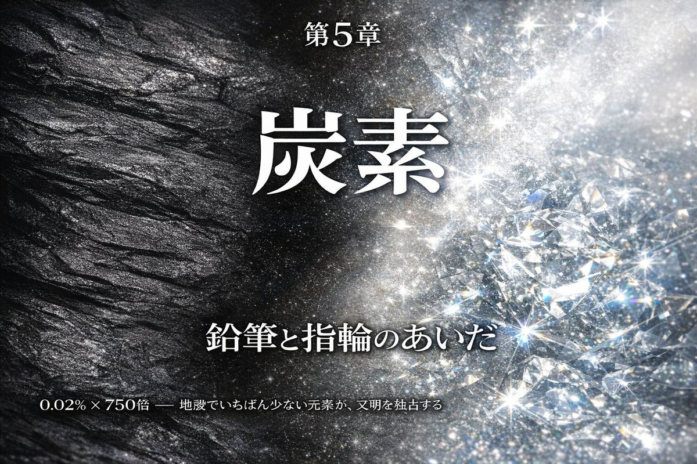
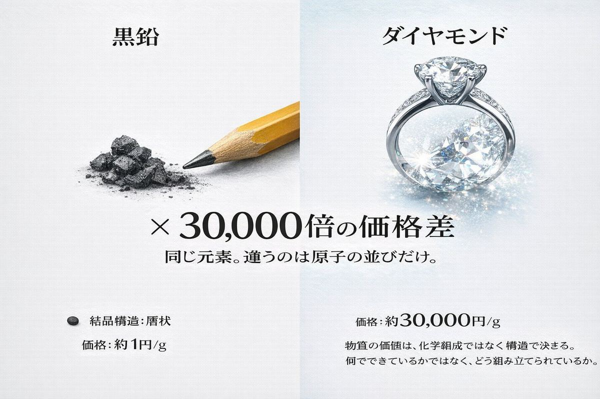
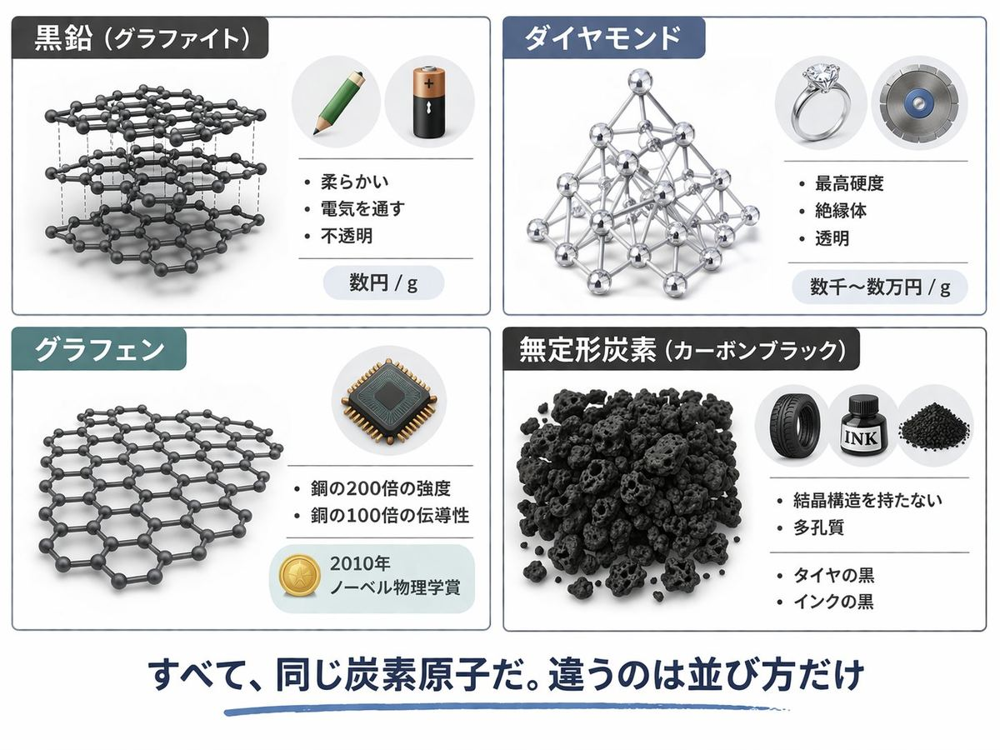
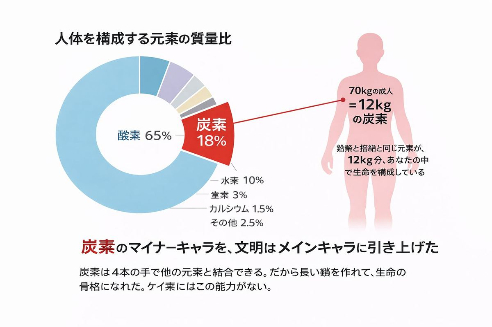
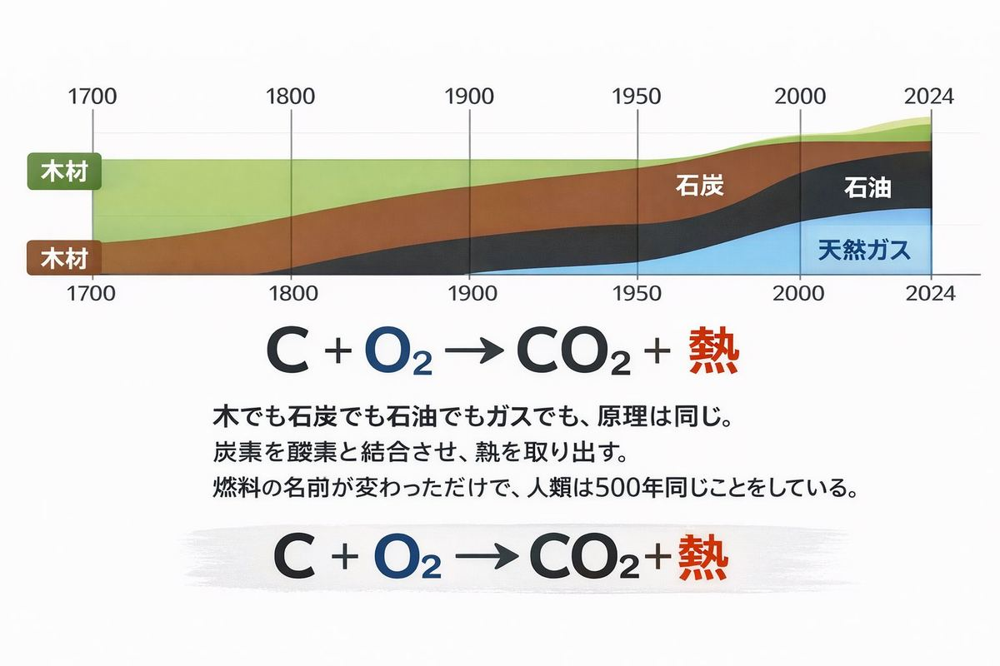
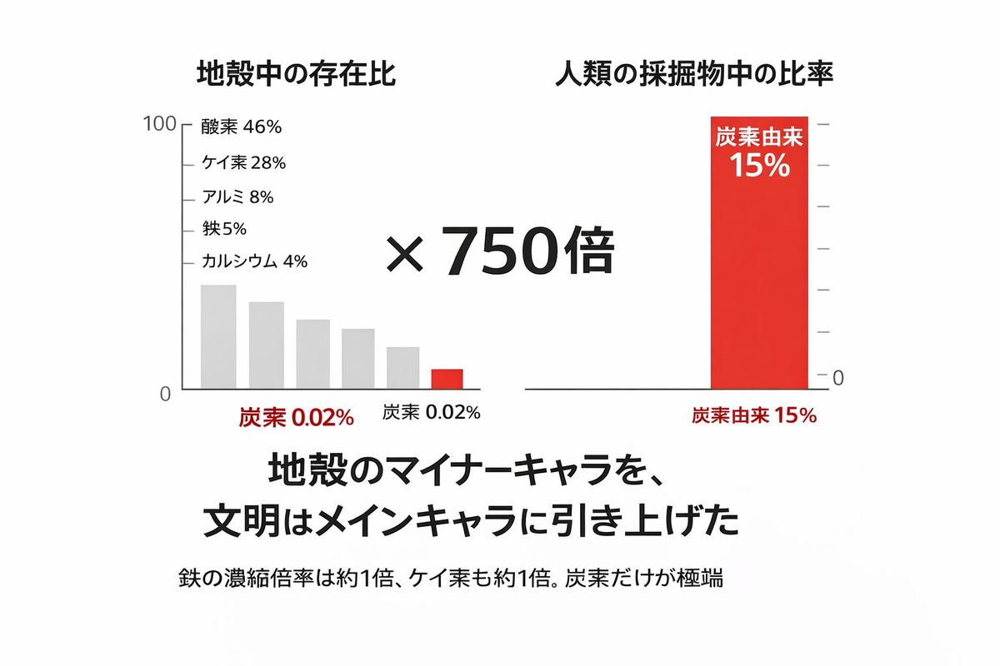
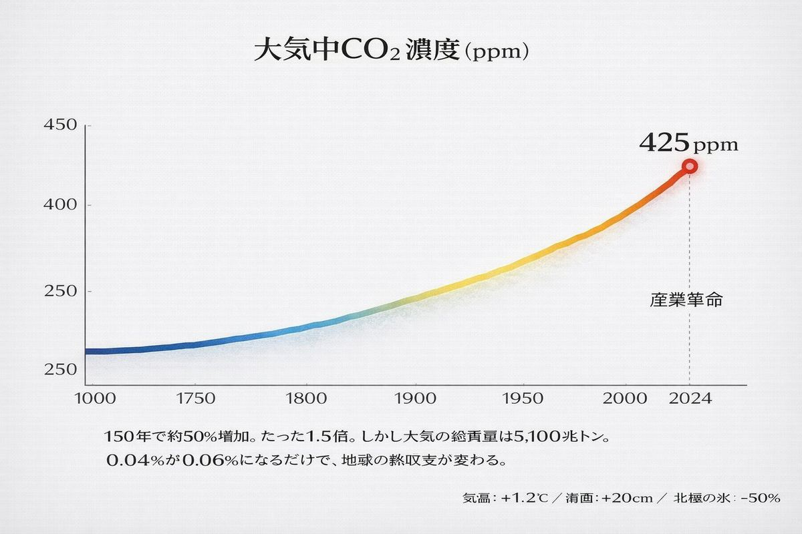
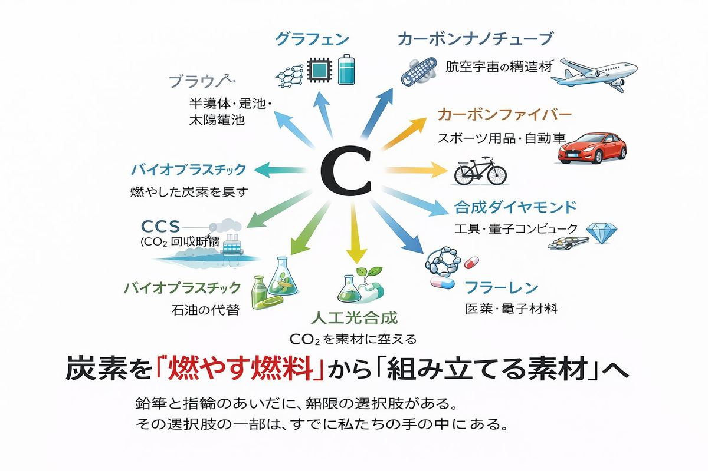

炭素は、宇宙が偶然書いた最も豊かな詩である。 ── 出典不明（科学エッセイの誰かの言葉）
A. 15% B. 5% C. 0.02%
正解はC。地殻のわずか0.02%。
地球の表層を構成する元素を質量比で並べると、酸素（46%）、ケイ素（28%）、アルミニウム（8%）、鉄（5%）、カルシウム（4%）、ナトリウム（2.8%）……と続き、炭素は驚くほど下位にいる。鉱物の世界では、炭素はまったくの脇役だ。
ところが、人類が掘り出している物質のうち、約15%が炭素を主成分とする物質（石炭・石油・天然ガスなど）で占められている。
地殻に0.02%しかないものを、採掘量の15%まで引き上げる。濃縮倍率は約750倍。
これがどれほど異常な数字かは、他の元素と比べればわかる。ケイ素（地殻28%）の人類使用率は数%程度。鉄（地殻5%）の使用率は5%程度。地殻中の存在比とほぼ釣り合っている。炭素だけが、自然の配分を750倍も上回って消費されている。
私たちの文明は、ある意味で「炭素偏執狂」だ。

炭素には、もう一つ奇妙な特徴がある。同じ元素なのに、姿がまったく違う。
鉛筆の芯と、婚約指輪のダイヤモンド。この2つは、どちらも純度100%近い炭素でできている。原子はまったく同じ。違うのは、その並び方だけだ。
| 名前 | 結晶構造 | 性質 | 価格 |
|---|---|---|---|
| 黒鉛（グラファイト） | 層状（六角形の平面が積層） | 柔らかい、電気を通す、不透明 | 数円/g |
| ダイヤモンド | 立体格子（正四面体の連結） | 最高硬度、絶縁体、透明 | 数千〜数万円/g |
価格差は約1万倍。しかし、原子1つを取り出して並べれば、両者は区別できない。違うのは「並び方」という、目に見えない情報だけだ。
素材の世界では、化学組成だけでは何も決まらない。第1章で見た砂（同じSiO₂が砂粒にも半導体ウェハにもなる）と同じ法則が、ここにも現れる。原子の並びが、価値を作る。

純粋な炭素には、少なくとも4つの主要な姿（同素体）がある。
黒鉛（グラファイト）。 鉛筆の芯。電池の負極材。鋳鉄の鋳型。原子炉の中性子減速材。層構造のために、層と層の間が滑りやすく、軟らかい。
ダイヤモンド。 婚約指輪。研削工具。半導体の放熱材。立体格子のために、地球上で最も硬い物質。鋼鉄の100倍以上の硬度を持つ。
グラフェン。 黒鉛の層を1原子分の厚さまで剥がしたもの。2004年に英マンチェスター大学が単離に成功し、2010年にノーベル物理学賞。引張強度は鋼鉄の200倍、電気伝導性は銅の100倍。21世紀の「夢の素材」と呼ばれる。
無定形炭素（カーボンブラックなど）。 タイヤの黒、インクの黒、活性炭。結晶構造を持たない。
同じ元素から、これだけ性質の違うものが生まれる。指輪と鉛筆と次世代半導体材料が、すべて同じ「C」一文字なのだ。
宇宙でこの芸当ができる元素は多くない。炭素は、原子間結合の自由度において、周期表のチャンピオンだ。
「カーボンベース・ライフ（炭素ベースの生命）」という言葉がある。SF的な響きだが、これは事実の単純な記述だ。
地球上のすべての生物は、炭素を骨格として作られている。タンパク質、DNA、糖、脂質、ホルモン、神経伝達物質、酵素。これらすべての分子の中心に、炭素原子が連なる「炭素鎖」がある。
なぜ炭素なのか。理由は、炭素が4本の手（共有結合）を持ち、それらを自由な角度で他の原子につなげられるからだ。長い鎖になることもあれば、環状になることもある。枝分かれもできる。立体構造も作れる。
ケイ素にも4本の手があるが、ケイ素同士の結合はずっと弱く、長い鎖を作れない。そのため「ケイ素ベースの生命」は理論上は可能だが、地球上では成立しなかった。
地球の生命は、たまたま炭素を選んだのではない。炭素しか選べなかったのだ。

あなたの体重の約18%が、炭素でできている。70kgの成人なら、約12kg。鉛筆と指輪と同じ元素が、12kg分、あなたの中で生命を構成している。
しかし、この12kgはどこから来たのか。
たどっていくと、すべて植物の光合成に行き着く。植物が大気中のCO₂から炭素を取り出し、糖に組み立てる。それを動物が食べ、別の動物が食べ、最終的にあなたの体に届く。
さらに遡るとどうなるか。
地球が生まれる前、46億年前よりはるかに昔、どこかの恒星の内部で水素とヘリウムから核融合で炭素原子が作られた。その恒星が寿命を終えて爆発し、宇宙空間に炭素を撒き散らした。その炭素が46億年前に集まって地球になり、原始の海で複雑な分子を組み、最初の生命になり、進化し、巡り巡ってあなたの細胞になった。
カール・セーガンが「我々は星の物質である」と言ったのは、比喩ではない。あなたの体内の炭素12kgは、ひとつ残らず、はるか昔に存在した恒星の中で生まれた原子だ。
そしてその同じ星の物質が、鉛筆の中にも、指輪の中にも、これから読む本の紙の中にも入っている。

人類が炭素を「燃料」として利用し始めたのは、はるか昔にさかのぼる。木を燃やすのも、本質的には木材中の炭素を酸化させてエネルギーを取り出す行為だ。
しかし、炭素の本格的な大量消費が始まったのは、産業革命だった。
| 時代 | 主役の炭素源 |
|---|---|
| 〜1800年 | 木材・木炭 |
| 1800〜1900年 | 石炭（産業革命） |
| 1900〜2000年 | 石油（自動車・航空・化学） |
| 2000〜現在 | 天然ガス＋石油（「クリーンエネルギー」の偽装） |
すべての矢印が、同じ場所を指している。炭素を燃やしてCO₂を出す。
エネルギー源は時代とともに変わったが、原理は変わっていない。木でも石炭でも石油でも天然ガスでも、最終的には C + O₂ → CO₂ という同じ反応式に収束する。
前章で見た石油は、この炭素エネルギー史の最大の主人公だった。地下4億年の有機物を、一方通行で燃やして大気に放出する装置。あれは要するに「液体になった炭素を、酸素と結合させる行為」だった。石炭も石油も天然ガスも、エネルギー源としての本質は同じ。形態が固体・液体・気体と変わっただけで、燃やしているのはずっと同じ元素だ。
人類のエネルギー史は、要するに「どんな形の炭素を、どこから掘ってきて、どう燃やすか」の歴史だ。エネルギーの単位を「ジュール」ではなく「燃やした炭素のグラム数」で測れば、この4世紀の物語は驚くほど単純な一本の線になる。

ここで最初の数字に戻る。地殻中0.02%の元素を、採掘量の15%まで引き上げた濃縮倍率750倍。
この750倍は、CO₂濃度の変化と直接対応する。産業革命前の大気中CO₂濃度は約280 ppm。現在は約425 ppm。約1.5倍。
「たった1.5倍」と思うかもしれない。しかし大気の総質量は約5,100兆トン。その0.04%が0.06%になるだけで、地球全体の熱収支が変わる。気温は産業革命前から約1.2℃上昇し、海面は20cm以上上がり、北極の氷は半分近く失われた。
少量の元素が、惑星規模の影響を持つ。これも炭素の特殊性だ。鉄や砂を採掘量の15%まで使っても、地球の気候は変わらない。炭素だけが、量と影響の比が極端にずれている。

ここまでで、炭素には2つの顔があることが見えてきた。
燃やす炭素。 石炭、石油、天然ガスとして掘り出され、酸素と結合してCO₂となり、エネルギーを放出する。一度きりの一方通行。リサイクル不能。
組み立てる炭素。 4本の手を使って分子を作る素材として扱う。プラスチック、医薬品、繊維、グラフェン、カーボンファイバー。形を変えて残る。生命の本来の使い方に近い。
世界の炭素消費の比率は、燃やす:組み立てる で約9:1。9割が燃やされ、1割が素材になる。
「脱炭素」という言葉が、ここ10年で世界の合言葉になった。しかし、人類は本当に炭素から離れられるのだろうか。
エネルギー利用の脱炭素は、技術的には可能だ。太陽光、風力、原子力、水素、地熱。これらは燃やす炭素を必要としない。問題は速度だ。世界の一次エネルギー供給のうち、再生可能エネルギーが占める割合は2024年時点で約15%。残りの85%はまだ化石燃料。
材料利用の脱炭素は、もっと難しい。プラスチック、合成繊維、タイヤ、薬品、塗料、すべて石油由来の炭素を骨格にしている。これらをバイオ由来に切り替える技術はあるが、コストとスケールの両方で壁がある。
そして、生命利用の脱炭素は不可能だ。あなたの細胞は炭素なしには成立しない。光合成は、CO₂を取り込んで炭素を固定する反応であり、これがなければ動物も植物も存在しない。
つまり「脱炭素」という言葉は、正確には「燃やす炭素からの脱却」だ。炭素という元素を捨てるのではなく、炭素を燃やして空に捨てる習慣を捨てる。これがゴールだ。
言葉が短すぎて、意味が伝わりにくい。本当は「脱・炭素燃焼依存」と呼ぶべきだ。

最後に、もう一度グラフェンの話に戻る。
鋼鉄の200倍の強度、銅の100倍の電気伝導性を持つ、たった1原子の厚さの炭素シート。もしグラフェンが量産技術として確立されれば、炭素は「燃やす」ものから「組み立てる」ものに大きく振れる可能性がある。電池の負極、半導体、海水淡水化フィルター、宇宙エレベーターのケーブル。
カーボンナノチューブ、フラーレン、グラフェンナノリボン、3Dグラフェン。21世紀の素材科学は、ほとんどが炭素の「並び方」を制御する技術だ。
同じ炭素が、鉛筆になり、指輪になり、生命になり、エネルギーにもなり、未来の素材にもなる。問題は、私たちがそれをどう並べるかだ。
恒星の中で生まれ、地球で生命の骨格になり、太古の植物に固定され、4億年地下で眠り、そして人類の手で取り出された炭素。長い旅をしてきた星の物質を、煙にして空に捨てるのか。それとも、新しい形に組み立てて次の旅に送り出すのか。
鉛筆と指輪のあいだに、無限の選択肢がある。その選択肢の一部は、すでに私たちの手の中にある。